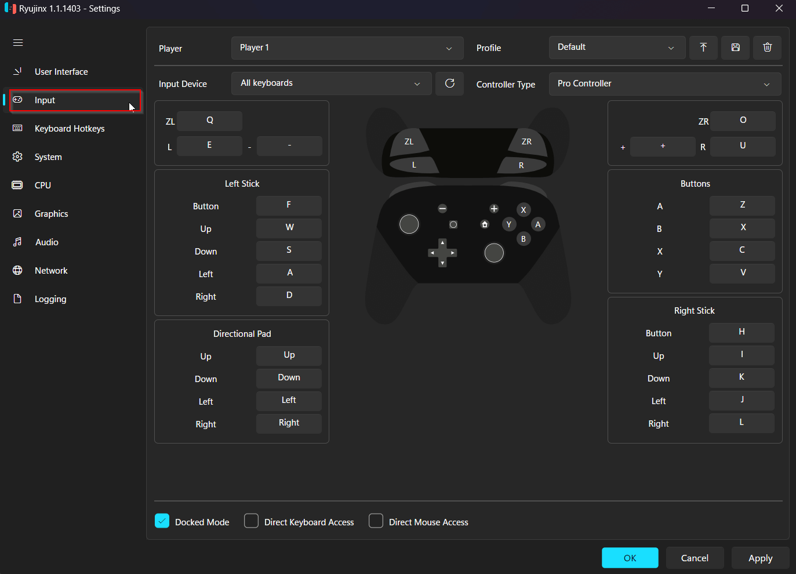

Ryujinx 对比评测：Switch 模拟器的开源新标杆
作为 yuzu 停更后的主力继任者，Ryujinx 在图形后端、原生安卓和输入配置上走出了自己的路。它到底比同类工具强在哪、又适合谁？
Switch 模拟器这个圈子这两年变化不小。yuzu 停更之后，接替它位置的候选者里，Ryujinx 是最突出的一个——不是因为它最早，而是因为它走的路和别人不太一样。第一次打开 Ryujinx 可以先去它的官网看看版本更新节奏和路线图，对它的定位有个直观印象。如果你之前用过 yuzu 或其他同类工具，可能会觉得界面相似，但往下挖两层，差异就出来了。这篇我从用过几款同类工具的老用户视角，聊聊 Ryujinx 在这个品类里的位置、它做得好的地方和它的取舍。
定位：同类软件的格局
Switch 模拟器的格局大致分三档：老牌的、停更的、还在活跃的。老牌的那几家在兼容性上积累深厚，但图形后端和平台支持保守；停更的那两家（yuzu 和 Citra 团队的后续）现在基本只剩社区分支；还在活跃开源推进的，Ryujinx 算是第一梯队，而且是少数同时覆盖桌面 Windows/Linux/macOS 和安卓原生的项目。
我不打算挨个点名竞品的具体版本差异——样本文档没给，编了也不厚道。但品类事实可以说：同类工具里，图形后端要么 OpenGL 起步 Vulkan 可选，要么 Vulkan 起步但安卓端阉割严重；输入配置要么只能识别预设手柄，要么 Joy-Con 形态支持半残。Ryujinx 在这几个点上的做法，我觉得值得单独写一篇。
它的差异化：三个别的工具没做好的点
Vulkan 优先的激进图形路线
Ryujinx 是少数把 Vulkan 当默认图形后端的 Switch 模拟器。点开设置的 Graphics 标签，Backend 下拉里 Vulkan 排在第一个，OpenGL 是备选——这和许多同类工具 OpenGL 起步、Vulkan 靠用户手动切的默认逻辑刚好反过来。
这条路线的好处在中高端显卡上能直接看出来：同一台机器、同一款游戏，Ryujinx 的 Vulkan 后端在 shader cache 预编译速度和纹理上传延迟上普遍比 OpenGL 后端快一截。如果你的机器显卡驱动更新及时、Vulkan 兼容没问题，默认就能享受更低的帧生成延迟和更少的卡顿点。当然代价也有：部分老显卡（比如 HD 4000 及之前的 Intel 核显）的 Vulkan 驱动烂得像筛子，直接报 Video Core Error，这时候就得手动切回 OpenGL。
原生安卓支持，不是桌面壳套安卓
许多同类工具的安卓端其实是桌面版本套了一层安卓适配壳，性能损失不小。Ryujinx 的安卓版本是原生编译的，用的是 NDK + Vulkan，没有额外的桌面模拟器开销。实际体验上，骁龙 8 Gen 1 及以上的机器跑中低分辨率游戏能稳定 30fps，骁龙 888 也能跑出能玩的帧。
但原生支持意味着硬件门槛更高。安卓 13 以下的系统、不支持 Vulkan 1.1 的 GPU 直接装不上或启动崩溃——这也是为什么 Ryujinx 安卓端的用户评论里，「启动就闪退」的帖子比例比桌面端高。安卓版本的安装包从下载通道拿，装之前对照自己手机的 GPU 型号确认一下 Vulkan 兼容性，省得白跑一趟。
输入配置：形态优先，逐键映射到骨架
Ryujinx 的输入配置逻辑是「先形态、后按键」——你得先告诉模拟器这根手柄伪装成 Pro Controller、单只 Joy-Con、还是 Handheld 形态，然后才开始逐键绑定。这个设计在同类工具里很少见，大多数模拟器直接跳到按键映射，把形态判断丢给游戏自己猜。
实际体验下来，这个设计解决了很多莫名其妙的问题：比如体感游戏需要 Joy-Con Pair 形态，分手游戏需要两只单 Joy-Con，Docked 模式下多人同玩需要 Player 1 到 Player 8 各配各的形态——这些场景下如果形态没选对，按键配得再准也没反应。样本文档里提到的「勾了 Docked 却在 Handheld 槽位配按键」的错位，我自己踩过不止一次，后来养成了先确认形态再绑键的习惯，问题就没再出现过。手柄槽位的对应关系和 Docked/Handheld 的联动细节，ryujinx文档里有专门一页讲透，遇到配置错乱直接翻那页最快。

它的取舍：优势背后的代价
优势不是白给的。Vulkan 优先意味着驱动兼容性门槛抬高，原生安卓意味着旧机器被直接排除，形态优先的输入设计意味着新用户上手成本更高。
还有两个没那么显性的代价：一是密钥与固件的匹配要求。Ryujinx 对加密世代的校验比同类工具严格，密钥文件过旧就会直接报 NCA Header key not found，连游戏列表都加载不出来——这在样本文档的报错表里列成了第一大原因。同类工具里有些宽松些，旧密钥也能凑合用，只是个别游戏玩不了。二是 Docked 模式与 Handheld 模式的手柄配置槽位是分开的，勾不勾 Docked 决定了你该去哪里配按键，两条配置各管各的，新手很容易配错地方导致按键全没反应。
另外，Ryujinx 对边缘游戏的兼容度不如老牌模拟器。主流的 3A 作品（塞尔达传说系列、马里奥系列、怪物猎人崛起）大多没问题，但一些独立工作室的小众游戏、或只针对特定硬件特性做了深度优化的游戏，偶尔会出现花屏、贴图错乱或直接启动崩溃。样本文档里提到的 BKTR 错误、Video Core Error，本质上都是兼容度问题的症状。
选购结论
什么样的人选 Ryujinx？有中高端显卡或骁龙 8 Gen 1 以上安卓机、愿意花半小时折腾密钥和手柄配置、主力玩 Switch 主流 3A 游戏的人。它在图形后端和平台覆盖上的优势是实打实的，折腾成本换性能提升，在这个圈层里性价比最高。
什么样的人选别的？手上硬件一般、或者只想装完即玩、主力玩小众独立游戏的。老牌模拟器虽然图形后端保守，但兼容性更广、上手门槛更低。
最后补一句：Ryujinx 值得单独写，不是因为它比所有同类工具都好，而是因为它把开源项目的两条路线——激进性能优先和广泛兼容优先——踩在了前者那条上，而且踩得很实。你如果在这个品类里找「下一步该往哪走」的答案，看看它的做法就够了。本文涉及的资料同步维护在三个开源仓库里，主仓库在 GitHub，国内访问走 Gitee 和 GitCode 更顺畅。